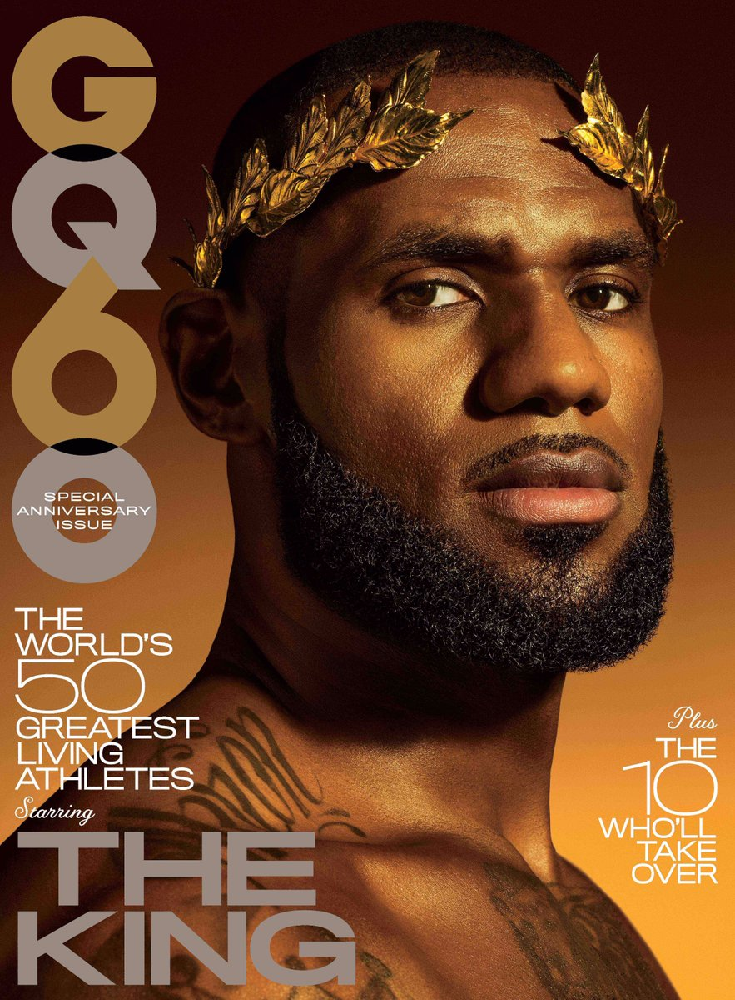
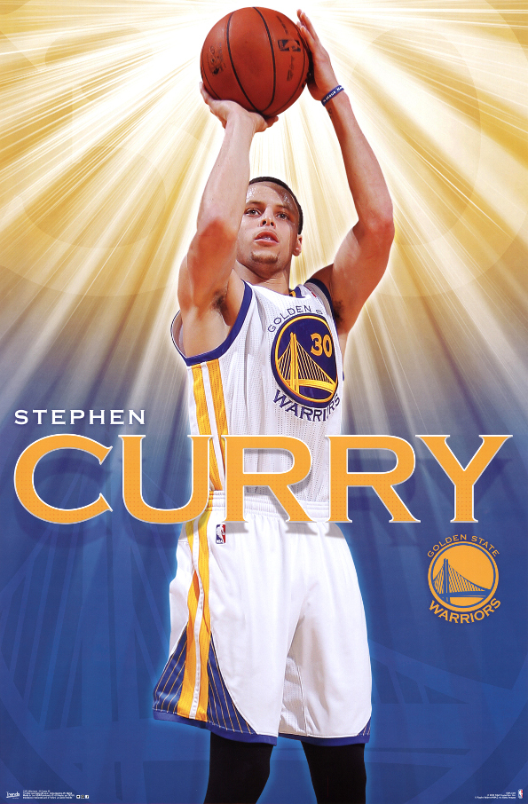
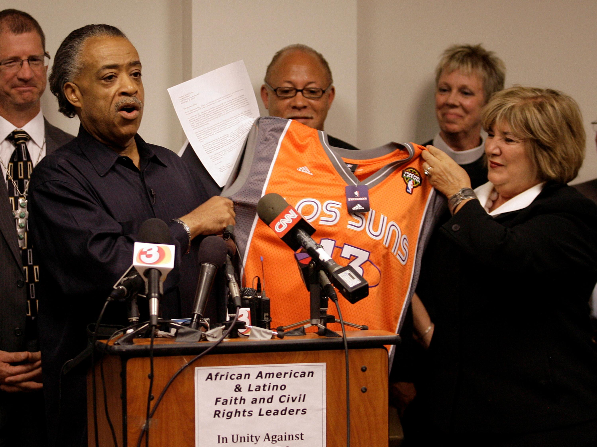
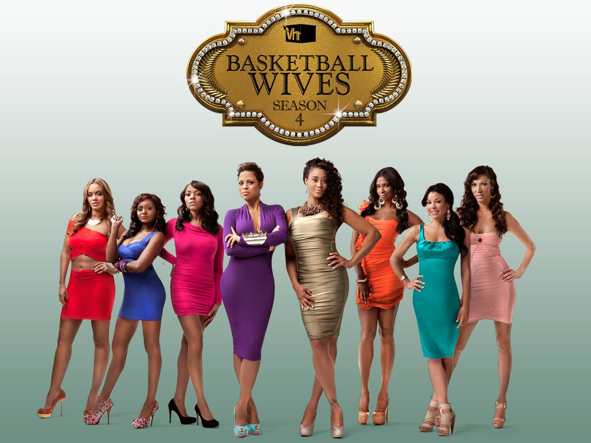
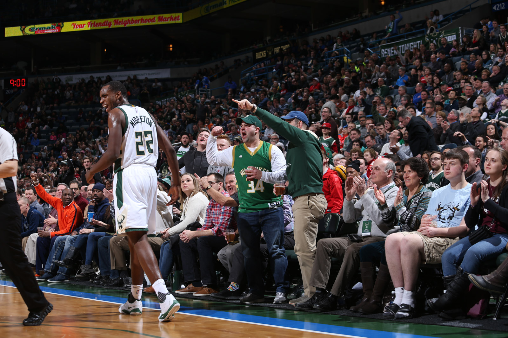
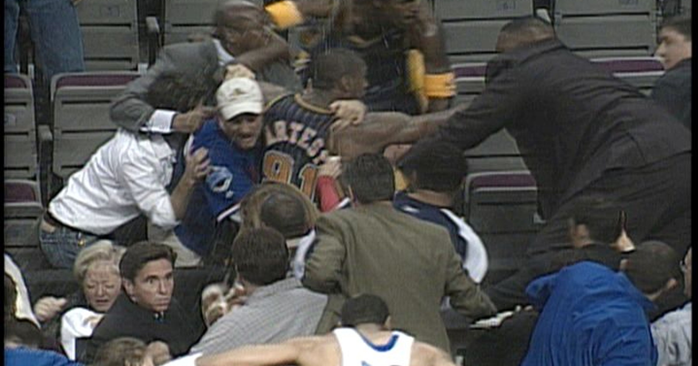

He must be tall, dark and shimmering with sweat. His expression showing no one could ever reach his level of greatness. But this radiation of perfection is not only seen when on the court. This type of supernatural human excels in every aspect of life. This man embodies the term MVP trough everything he does. He is that what only a few achieve and many aspire. This unrealistically perfect human might seem like a fictional character, only he is also seen in our world. The world where not only children can have unrealistic role models, but where adults are persuaded to also see the supernatural. They will look up to a man not only for its athletic abilities, but also expects him to be socially and politically engaged, portray the perfect family life, be an actor and musician while selling us everything he consumes. This adult Disney World portrays a ma- ture dream, such is only able to exist in America. As a non American basketball spectator this level of fandom is non existent in my world. American basketball is no longer a sport, it is a world created out of a game starring two teams that play a 40 minute match that is turned into an individual career selling the perfect life.
The story of the underdog striving to become the hero is a story as old as time itself. It is a fantasy told in fairytales and mythes, the legend that becomes supernatural. It could be explained as ignorance or even stupidity to think this is realistic. But is it really that stupid to think that our fantasies have become reality? As a child you’ll watch Disney movies thinking this is a possible future, in a world where you are born as a poor unwanted person to growing up and overcoming this obstacle by fighting for yourself. You see it in Aladin, the boy that wandered the streets with no successful future. He finds a lamp that grands him 3 wishes. These wishes bring him to a world that is unknown to him, but by fighting for his place he ends up in the palace with the princess riding a magic carpet. After reaching a certain age we forget the magic that the story contains and act as if this is pure fiction. We don’t realise that growing up does not mean stop believing in fairytales, we just create them in other aspects of our life. It is a world we created and now see as amusement, in which we create our own role models expecting them to rise to inhuman levels of perfection for our own sense of imaginative reassurance. The issue with this mature fantasy is that actual humans live in this world and not cartoons. And only a few are cut out for this role. It is a performance being performed 24/7 to entertain the ordinary and sell them the unreachable world they live in.

WHAT IS A SUPERFAN
fandom
NOUN
1
mass noun
The state or condition of being a fan of someone or something.
1.1
count noun
The fans of a particular person, team, fictional series, etc. regarded collectively as a community or subculture.‘the Breaking Bad fandom’
There are fans and there are fanatics. Where fans prefer a certain person the fanatic idolises a person. This gratifications rises to a level where it could become obsessive. The fanatic has a daily routine in which the obsession is a big part. They will paint their torso’s in team colours and scream at their tv from the couch in their living room. But also looking for online supporters that share the same obsession. In that case the fanatic becomes part of a fandom, a platform that mostly operates online and will gather every bit of information to portray this person as a hero. Collectively they may show their enthusiasm in a variety of ways to promote this person of their interest. By being a members of a fan club, holding or participating in fan conventions, or writing fan mail. They may also engage in creative activities, called "fan labor", such as creating fanzines, writing fan fiction, making memes or fan art. By this intense obsession the relationship becomes one sided and fictional, a connection with a fantasy. A person with a character. Because there is no direct interaction between the fanatic and the hero, the fanatics fantasy can take over. Making it an endless world where people come together and share their connection to this person. As an outsider of a specific fandom the easiest way to get acquainted is online. There are dozens of fan pages praising actors, musicians, politicians, athletes, teams and so on. Within this online world a whole new form of communication arises. It becomes a collection of fan labor organising every aspect of their succes. Mostly disregarding the need for structure or readability and creating a waterfall of glorifying quotes, articles and images.
Steven is a 38 year old customer service representative at a local bank in Rockridge, Oakland, Californië. He lives alone in his 40 square meter apartment just out of the centre. On Monday and Wednesday he plays basketball at a local court with his buddies. The guys all work similar jobs and use this time more so to hang out with the guys than for getting fit. Here last weekends game of the Golden State Warriors is discussed in detail among the guys. Everyone all of a sudden becomes an expert in basketball and critic the player on all aspects. Steve knows all the stats of last weekends game and sometimes corrects the other guys. But because he does not want to come across obsessive he chooses to let some wrong statements go, and aggravates himself quietly. After the game is finished on the way home Steve continues this discussion alone by whispering what he would have said if he spoke up earlier. During the imaginative debate he grabs his phone out of his pocket and checks the latest news on the Warriors. He is not really reading what the articles say but just by looking at then he feels connected and secures his sense of knowledge on the subject. This end the whispering discussion as he arrive at his front door, gets his keys and enters his apartment. He trows his bag with a dirty town and shoes in the corner underneath his coatrack knowing he will not unpack it before upcoming Wednesdays practice. He walks straight to the kitchen and turns on the oven for the left over pizza that is waiting in the fridge.
WHO IS THE SUPERFAN
The obsession of one person for another is not able to exist without this space between the two. The Superhuman is only able to exist because the superfan and him are not physically know to each other. The superhuman lives in the fantasy of the superfan and can only reach this level of succes in the eyes of the beholder. There he can become the perfect man in every aspect of life. When the fan is feeling down about himself, he only needs to look at his hero and feel reassured and satisfied. This goes for all aspects in life, like a good marriage, fashion skills, what car to drive, what food to eat, what music to listen to and how to be in the best shape. These are obvious unreachable aspects to perfect for a regular human being. But not for a superhuman. He provides this succes for his fan to live trough him. The fanatic can wander out of his own life and enter the utopia where the superhuman exists in. This fan does not strive to become an equal, he validates his happiness trough the fictitious life of the athlete. Because this life is a figment of the imagination it lives in a virtual world to substantiate this fantasy.
On www.lebronjamesgrandmothersfanclub.org a group of grandmothers gathered their obsession for the basketball player LeBronJames. A 2.03 meter long center that used to play for the Cleveland Cavaliers, but now plays for the Los Angeles Lakers. On this online platform grandmothers from Arkon Ohio, LeBron James his place of birth, come together and share information on their hero. They make clear on their website that LeBron James is not only a great basketball player, but a great human in all aspects of life. “LeBron Fans… We are a group of Grandmothers or Great-Grandmothers, who first of all love LeBron for his generosity to his family and home town; especially the children. His God given gift of basketball brings us so much joy and makes our hearts tick! Sincerely, Alder Chapman, President of the LJGFC.”. These grandmothers tent to connect to other fans worldwide to share their mission. “Mission Statement. A social organisation desiring interaction with other basketball fans. To volunteer for various community activities and to promote endeavours that are associated with LeBron James. To promote endeavours to better the community.To establish national and international friendships and understanding through common interest in basketball.”. They talk about a community that heroes one person being LeBronJames, and to connect trough his succeses. On their website they invite visitors to a monthly meeting in honour of LeBron James.
Monthly Meeting Schedule:
General Meetings held
on the first TUESDAY at 6:00 pm
at Helen Arnold CLC-Cafeteria
450 Vernon Odom Blvd. Akron, OH
Leaning over with his elbows on the the kitchen counter Steve scrolls trough his phone again. Now he is on the fan page he created for Stephen Curry, the point guard of the Golden State Warriors. There he created a platform for people to have discussions and share information on their shared hero. The oven light goes off and Steve lays down his phone to oven the fridge and take out the pizza to put in the oven. After closing the over door Steve resumes his position on the counter and start reading the comments. There are now around 350 people that are on his website on a daily basis, and some of these people became his close virtual friends. He sees Mark, who now lives in Tennessee but is still a die hard fan of Curry, respond to one of the haters that posted a comment on Curry’s performance of last weekend. Steve supports Mark by liking the comment and goes on scrolling trough the page. He is proud of what he created and feels supported in his passion. Here he is not ashamed to look up to a guy the same age as he is. Cause Curry is not a tangible person, he is a superhero.
BEHAVIOURAL CHANGE
Superfans have their own media and visual language in which they show their love for their idol. As seen before is the example of the legroom James grandmothers fan club, people can come together to show this appreciation for a specific person or team. What is seen on these kind of platforms is an infinite dedication to the cause that is spreading love for their hero.
“King James, The Chosen One”
“All of the grandmothers felt a sense of pride for their beloved LeBron. Its about love, our love for him”
“He is the King of every court, his name is LeBron James!!!”
These quotes are only some of the many deifications seen on online fanbases. By this form and extend of gratification from fan to idol the space between the two will grow to an extend that the idol becomes somewhat like a superhero. A person that is a heroic stock character, usually possessing supernatural or superhuman powers. And in case of the basketball player the superpowers are doing it all. Being the best athlete, having the perfect family, showing off the best style and overall live the perfect life. Something that is a dream for most but an unrealistic vision for themselves. The reason why athletes do so well with fans, and get this kind of platform where they can show off is because fans know where they came form, they had to struggle to get where they are now. They are superhero’s carrying human traits. This allows them to look up to someone and at the same time feel connected to them.

SUPERHUMAN
Glorification by the superfan of the superhuman
The story of the underdog striving to become the hero is a story as old as time itself. It is a fantasy told in fairytales and mythes, the legend that becomes supernatural. It could be explained as ignorance or even stupidity to think this is realistic. But is it really that stupid to think that our fantasies have become reality? As a child you’ll watch Disney movies thinking this is a possible future, in a world where you are born as a poor unwanted person to growing up and overcoming this obstacle by fighting for yourself. You see it in Aladin, the boy that wandered the streets with no successful future. He finds a lamp that grands him 3 wishes. These wishes bring him to a world that is unknown to him, but by fighting for his place he ends up in the palace with the princess riding a magic carpet. After reaching a certain age we forget the magic that the story contains and act as if this is pure fiction. We don’t realise that growing up does not mean stop believing in fairytales, we just create them in other aspects of our life. It is a world we created and now see as amusement, in which we evoke our own hero’s expecting them to rise to inhuman levels of perfection for our own sense of imaginative reassurance. The issue with this mature fantasy is that actual humans live in this world and not cartoons. And only a few are cut out for this role. It is a performance being performed 24/7 to entertain the ordinary and sell them the unreachable world they live in. This form of glorification does not only come from fans looking at the athlete and his achievements.
The players had people who preceded them and created this platform where the athlete could do more than playing their sport. In basketball NBA hall of famer, Bill Russel was one of the first athletes to make a public political statement that opened the doors for others. Russel was next to his basketball career a political activist during the 1960’s but this was never shown in the media. But in the 1963 march on Washington he was depicted as a role model for young men. When renowned civil rights activist Medgar Evers was assassinated, Bill Russell traveled to the racially charged Jackson, Mississippi to ask Medger’s brother Charlie how he could help. After this move Russel gained followers that not only looked at him as a physical hero, but also as a politically engaged and educated man. Russell then met several times with both Martin Luther King and Malcolm X and joined each man in their protests and acts of civil disobedience. Russell said he was inspired to get involved by the racism he encountered in his own home of Boston, despite the NBA titles he helped deliver to the city. In honour of his skill on the basketball court and activism off it, Russell was given a statue in Boston in 2013. The difference with the statements then and now is that back then they were made off court, not during ‘work hours’. This view and political activity was not seen as a part of the sport, but as an extracurricular activity. It was accepted to have your own views of the court but these two occupations were never merged. Only in 2010 we see a clear interconnection between the basketball player and the public figure and the two became one.
In 2010 the state of Arizona passed a new immigration law in an effort to stop rampant illegal immigration from Mexico. The law was passed in the Arizona State Legislature with strong bi-partisan support and was modeled on existing federal immigration statutes. However, many people in Arizona saw the law as racist and un-American, including Robert Sarver, owner of the NBA’s Phoenix Suns. In response, Sarver rallied his team to make a political statement on national television. During a May 5, 2010 playoff game between the Phoenix Suns and San Antonio Spurs, Sarver had the entire team wear jerseys with the logo “Los Suns” on it. The jerseys were to both protest of the new immigration law and show solidarity with Mexican immigrants. The media reported that the entire Suns team unanimously decided to wear the jerseys. And, the game on May 5 that year had the bonus of occurring on Cinco De Mayo, a major Mexican holiday. This officially made the game as much part of a public statement as the players were. Now the role of a basketball player was not just in the form of an athlete on court, but a public figure with many ways of influencing society since he could speak his personal opinions during work hours without being disregarded for it.
And now a days these type of statements are still made. Because of their predecessors players are now able to shine light on political issues that they find relevant and therefor help a certain institution or group. The latest example happend on the 10th of November 2018 during the Clippers v.s Bucks game in the Staple Centre in Los Angeles. The Bucks and Clippers honoured the 12 victims of a recent mass shooting in Thousand Oaks, Calif. On Wednesday night, the deadly incident took place inside Borderline Bar & Grill. Ahead of their matchup on Saturday the players from both teams wore black pregame warmup shirts with the phrase "ENOUGH." on the front. Each of the slain shooting victims's names were listed on the back. 20,5 million people watched the NBA finals in 2017. That is the same amount of people that watched the 2013 presidential inauguration of Barack Obama. Not including the millions of non American online watchers of the games. This following can be very powerful when it comes to political statements like these. The players can make conscious choices regarding what topic to discuss knowing it will reach an enormous audience. This uprise of the politically engaged athletes that arose in the 60’s resulted in a 21st century where basketball players have influence in every aspect of modern society.

Later that evening Steve wakes up from a loud noise. He opens his eyes and realises that he is laying on the living room couch with his laptop on his chest. All the lights are on and he has no idea what time it is. After 3 seconds of disorientation he realised that the loud noise came from his laptop playing youtube video’s. The sound was the intro of Ayesha Curry’s cooking show where she was presenting her new cookware line. Another 6 minutes pass before Steve realises what he is actually looking at, not that he minds watching Stephens wife. She portrays everything a woman should be, she is beautiful, funny, can cook and is a great mother. Not only that but Stephen and Ayesha share the perfect love story where they met in high school and have been together ever since. Ayesha never doubted her man and his abilities to become a groundbreaking player in the NBA. She was there for him when he had nothing, and that says a lot. Unlike Jessica, she is just an ungrateful spoiled bitch. Steve’s mind turns dark quickly and now he can’t stop thinking about his ex that left him 4 years ago. He knows that when she left him he was not in the best state of his life, but to leave so easily was unexpected for him. He did not plan to be 34 and single, and therefore his future plans changes quickly. Looking for a girlfriend seemed unfeasible after a relationship of 7 years so he focused on his job and his friends. But a video like the one of Stephen and his family sparked this feeling of having a family up in Steven. There was no harm in downloading tinder once again to see if there were any new girls around. Maybe he could bring her to the court as a first date and just playfully shoot some hoops, That is what Stephen must have done when he first started dating Ayesha. The next video automatically started playing on the now steaming hot laptop burning on his chest. It was 3:48 A.M and in the morning he had to be at work at 8:30AM for a first aid course in case of emergency at the bank. Leaving his laptop open and his pizza on the table Steve stumbled to his bedroom hoping he would fall back asleep immediately. Only that happened 34 minutes later after he scrolled trough the Warriors instagram account reporting all the haters as inappropriate accounts.

‘REAL’ EXAMPLES OF THE PERFECT LIFE
The world where these athletes live in as a consequence could be compared to Disneyland for adults. Where children look for a place where everything is perfect and beautiful, adults do the same in the world of American basketball. Characters are formed and placed into a storyline where they become the superhero of their own life story. It is a fictional utopia created by the fantasies of the fans and realised in forms of tv shows and ad campaigns. Seeing the American dream being lived and succeeded can be satisfaction enough for the fans to live trough. Their goal is never to become like their hero, live the same lives or have the same athletic abilities. To see their hero succeed in all aspects of life personates their happiness for them.
One of the most accessible views into that fantasy world is trough ‘reality’ tv programmes. The topic of basketball in reality tv is very populair in America. It documents supposedly real-life situations, and often features a populair celebrity and their family as the cast and individuals who are typically not actors to make it seem unscripted. Reality television exploded as a phenomenon in the late 1990s and early 2000s. It took the American basketball world 10 years to reach this platform and broaden the fans view into the lives of the basketball players. In 2010 an enormous uprise of basketball related reality tv occurred.
It slowly sparked intrest with the public when the most famous reality tv programme Keeping Up With The Kardashians starred its first NBA player Lamar Odom. Dating Khloe Kardashian he would become the first of many basketball players to get involved with one of the Kardashian siblings. After dating for a year the two became so populair that they got their own side show called: Khloe and Lamar. This would show the perfect life between a girl an a professional athlete, living in their mansion in California and starting their family. From here on dozens of other basketball related reality tv programmes started to appear on tv, one even more popular than the other. But one of the most famous till this day being Basketball Wives.
The series premiered in America in 2010 with over 3.1 million viewers, and chronicles the lives of a group of women who are the wives and girlfriends, or have been romantically linked to, professional basketball players in the National Basketball Association. And with several spinoffs Basketball Wives is one of the most populair basketball related programmes on television till this day with over a 100 episodes aired. The series starred Suzie Ketcham, girlfriend of Michael Olowokandi, Gloria Govan fiancee of Matt Barnes, Jennifer Williams wife of Eric Williams, Evelyn Lozada iancée of Antoine Walker and Shaunie O'Neal wife of Shaquille O'Neal.
Even though the series is called ‘Basketball Wives’ it hardly shows any basketball. It is a drama based programma that mostly shows women spending a lot of money and getting into scripted fights with each other. This angle into the basketball world really showed the entertainment side of this world. A programma about basketball that did not really show any basketball broadened the platform for the normal athlete to become a role model next to being a hero. In this medium he could show his family and his ways of living to connect to even more fans. Now not only sports fans started to take intrest in the world of basketball but anyone who turned on their tv would be flooded with basketball related content. With the shows that followed like Lala’s full court life starring Carmello Anthony, Teyana & Iman Shumpert, Love and Hip Hop starring Daniel Gibson and Millionaire Mama’s Boy starring JaVale McGee basketball officially did not only took place on the court any longer. It opened its doors to the public not only as a sport but as a way of life. A world created for the fans to portray a fictional perfect life.
THE GAME
The court where two worlds meet
The only location where these two worlds collide is in the arena, on the court. Basketball is one of the only sports where the audience is so close to the court that they can feel the wind as the players run by. Even though the average amount of people that can fit in a basketball stadium is 20.000, the fact that there is no barrier between the player and the audience makes this game especially intimate. Because of this direct interaction between the two worlds the game would not exist without the audience, making die audience a player in the whole performance that is the game. The NBA Global Games might be one of the best examples in which you can see that the game would not be the same without its audience. A series of games featuring NBA teams that are played outside the United States and Canada. Its purpose is to bring teams from the National Basketball Association to play games against another NBA teams solely for the entertainment of the fans. It all started in 1993 when the league decided to send two of its teams to Europe to play a pair of preseason matches against each other. An exhibition series between the Orlando Magic and the Atlanta Hawks was held in London, United Kingdom, a precursor of what would later be called the NBA Europe Live Tour. Further games were held in Italy, France, Germany, Russia, Spain and Turkey. It was not until 2011, however, that a regular season matchup was first played in Europe. The first regular season games in London starred the New Jersey Nets against the Toronto Raptors. The transition between basketball as a sport and basketball as a show is very important in the history of the game as it is now. These internationally played competition games initiated a hype that could be compared to a play. A show that travels around the world to reach all its fans and is there to entertain the audience, and no longer to win the match.

The parking lot was totally empty apart from 3 cars. Steve drove his car all the way to where he stood right next to the entrance. The first person he saw when he walked in was Magda, a 45 year old supervisor who had been working at the back for 2 years now. They never really became friendly with one another. That could be caused by the fact that Magda was only working for 4 months after which she gained the position of supervisor when Steve had been working there for over 4 years. Or because Magda originally came from Cleveland and always stayed a true Cavaliers fan. LeBron James, seriously. Such an arrogant and selfish player, who always only played to make himself look good. And after his horrible response after game 1 he dug his own grave. In the NBA Finals J.R. Smith committed a horrible mistake in the final seconds of Game 1 when he appeared to forget the score. A mistake only a team as the Cavaliers could make Steve thought. In the time between J.R. Smith’s baffling blunder at the end of regulation and the start of overtime LeBron James stood there as the self proclaimed leader that he is doing nothing. Realising their opportunity to steal Game 1 had likely slipped away, the gentle giant acted as if it was not his wrong doing and shrugged it off. A disgrace of a captain if you asked Steve. Only Magda did not agree. After the game a reporter asked James if he believed criticisms of him were fair, in that he was not taking time in the break to lift up his teammates. James first offered a sarcastic response. “Me? Me being criticised?” James said. “You’re saying I got criticised for something, right? Nah, I don’t believe that. Not me.” James then got serious, and suggested he has already done enough to lift up his teammates. “I don’t care. I don’t care at all,” James said. “We’re in the NBA Finals, how much more picking up teammates do you want me to do? We’re in the NBA Finals competing for a championship.” Exactly the NBA Finals, Steve argued to Magda in one of their first discussions. You would never see Stephen Curry act this passive in the most important game of the season towards his teammates. Even tough he is the obvious MVP of the Warriors during the game Stephen equal to his teammates but carries the job to uplift them when things start to spiral down. Working as one team they would fight for the win, as they showed after they won the final game. Magda has not spoken to Steve since the Golden State Warriors won the NBA finals. After all the arguments they had prior to the finals Magda let go of this mutual competition, but at the same time also let go of Steve. Steve could not care less, she always was a pathetic excuse of a basketball fanatic and this made it all the more easy to just ignore her. Therefore Steve walked straight passed her without saying a word towards his desk. He was not going to let her spoil his day. After all tonight he had tickets to the game. This was a good day.
THE COURT AS A STAGE
This role that the audience takes on is not only a performance from their part. Everyone that is present during the game in the arena is part of it. The court changes into a stage, the people into actors and the game into a script. There are certain unwritten rules that lie in de surrounding elements. By entering the arena you are part of it, rather you are a player on the court or you are a spectator on the bleachers. For instance as a spectator, you enter a seating area all facing one place; the court. On that court are only 13 people at a time, the 10 basketball players and 3 referee’s. Opposite to that are 20.000 people in the audience, literally looking down on the players. This setting sparks certain behaviour in the audience, they are the majority and therefore a united front. Also because they are not allowed to cross the sidelines of the court they have no other way of influencing the game than by using their voice, that is their only power. And they will use and abuse this power to become part of the game. Creating a space where the audience can consciously cuss out 10 worn out players and 3 nervous referees because that kind of behaviour is part of the role they play. For the players and the referee there are similar unwritten rules, but those lie only in between the sidelines of the court. A good example of this strange shift in power is seen between the players and the referees. Mostly basketball players are men between their 20’s and 30’s, tall and in the best shape of their lives. This is the highlight in their career and they won’t take no for an answer on and off the court. Except for the referee, he holds the whistle, and that whistle is worth more than anyone’s career. That little object changes the referee’s status and gives him the power to not only navigate the game but also to stand his ground against the 10 men around him. He has the role to oversee everything that happens during the 40 minute game and interfere where necessary. The players on the other hand also have their roles in-between the court lines, but more on a physical level. A group of 10 men normally would not stay out of a fight if they ran into each other outside of the arena, but on the court this kind of behaviour is excused. Not only for the sake of the game where it is expected to be physically active, but also in their emotional behaviour. They can provoke someone after they scored, they gain power by the level of their basketball performance. This power can be expressed verbally to the other teams players without any consequences. Players gain a certain confidence that will evolve in a superpower, it runs trough their veins and lets the audience see them as a superhero amongst thousands of spectators. These unwritten rules might not be visible during a standart basketball game, but when these boundaries are crossed it becomes clear that there is a code of conduct that people adhere to. During the 2004 Indiana Pacers v.s Detroit Pistons game an altercation occurred, now known as ‘The Malice at the Palace’, that overstepped all of the unwritten rules and all order was lost. With 45.9 seconds left in the game, Pistons center Ben Wallace went up for a layup, but was fouled by Pacers small forward Ron Artest. Furious for being fouled when the game had already been decided, Wallace pushed Artest. A fight broke out on the court between several players. After the fight was broken up, a fan threw a drink from the stands at Artest while he was lying on the scorer's table. Artest immediately charged after the fan, sparking a massive brawl between players and spectators that stretched from the seats down to the court and lasted several minutes. In this particular example you can see what happens if the audience and the players don’t stick to the role they are playing by overstepping the boundaries. The fans were allowed to join verbally but not physically, but when one of the people in the audience decided to throw the drink the rules changes and everybody lost control. Fans ran up on the court and players started swing at them, ending up in a big brawl where people showed their true nature and stoped acting. The game changed from being a show into an actual fight and no one was protected by their role anymore. All of these spacial elements are important for the structure of the game and its course. It is now shown that without these elements there is no structure and therefore no game.

Finally the day was here, game day. Steve entered the arena full of anticipation while music was playing. Fans dressed in their teams attire and colours found their seats and got ready for the game and their part in it. Steve wore his favourite blue and yellow Warriors t-shirt with an awkwardly matching blue jeans. Even though he loved seeing the arena filled with painted faces and scarves held up in the air he was a bit more toned down. He waited to make that if there ever was a chance Steph would see him again he would be able to recognise him from when he saw him at Gazzali’s supermarket 3 years ago. As the lights dimmed down the players got ready to enter the court and the audience got up from their seats to welcome their hero, Stephen Curry. Announced by the voice filling the whole arena the players ran on the court in order of the numbers on the back of their jerseys. “NUMBER 30, STEPHENNN CURRYYY” . Chanting his name the audience created a waterfall of noise flowing from the top of the stadium all the way down to the court. When all the players had been announced Nayah Damasen appeared in the center circle of the court with a spotlight shining upon her. Steve had seen her perform a number of times, also outside of the arena. Known as the Golden State Warriors good luck charm Steve had to look into her and he knew several of her songs. As she started singing the national anthem 20.000 spectators and 24 players cohesively joined the singer in her performance with a straight face. At this moment everybody was the same, and this was the only moment. By cohesively singing the anthem the atmosphere in the stadium changed and everybody was ready to perform, the audience as much as the players. It is like a switch has been turned and the play starts. Steven is still stand straight up to get a glimpse of Stephen who is standing about 30 feet away from him. After filming for about 10 minutes Steve opens the browser on his phone to go to his Curry fanpage. There he immediately uploads the video. There are already about 70 other posts about the game of that day from other online fans. Steve puts his phone away and looks around the arena. The audience gets ready for battle by chanting their teams songs and prizing their favourite players, while the players shows their last drills in the warming up. Everybody is ‘on’ and focuses on one thing only, winning the battle that is about to go down. Steve sees 45 year old women with blond bobline haircut changing into 6feet tall men, sipping their beers and chanting with their fist in the air. He feels a sense of pride and solidarity with people the people that surround him but have never seen before. They became one team all together to defend their hero’s and they would do anything in that moment to show that.
CHANGE THE ELEMENTS
Asger Oluf Jorn was a Danish painter, sculptor, ceramic artist, and author. He was a founding member of the avant-garde movement COBRA and the Situationist International. In 1962 Jorn wrote ”The Application of the Triolectical Method in General Situology," a philosophical tract that spoke about prevailing dialectics. Explaining his notion of triolectics. A refinement on the Marxian concept of dialectics. In philosophy, dialectics is a method of reasoning and reaching conclusions by considering theories and ideas together with ones that contradict them. Jorn argues that there is never just two ways a situation could go, that it works and that it won’t. There is always more than one outcome if you have more than one possible situation. Since this is a very heavy and difficult philosophical statement he tries to explain in a more generally approachable way in the example of a three sided football game. Played on a hexagonal field, with three goals the game is played by three teams instead of two. That modification of the conventional concept of a sports game already makes for an interesting shift. There is not one winner and one loser. Also the game is not won by the team that scores the most goals. In three-sided football the winning team is that which concedes the fewest goals. This adjustment shows that winning and therefor being the best does not have to be equal to making the most goals. In this example the team that has the best defence wins instead of the team with the best offence. That change in mindset is new in the world of sports. We are used to the idea that team sports are aggressive and has the aim to ‘attack’ the other team. This way of changing the physical and visible elements to change the overall mind set of the game interests me. Since I argue that the audience is as much part of the game as the players are in the game of basketball, I think it is interesting to see if by changing the elements it highlights that concept, and shows that the purpose of American Basketball is no longer to ‘win’, but just to entertain.
So what if we change the elements of a basketball game. To do that we first needs to determine these elements. As I stated before the audience is as much part of the game as the players are, actually without the audience there is no game. Like the example of the London Game. The normal competition is shipped to another continent, just for the sake of entertainment. This interaction between the audience and the players is what makes the game. The court where the superfan and the superhuman meet. So what if we look at that court. It is a rectangular shaped wooden floor filled with lines, and with the most important one, the outer line. This line is the only wall that separates the audience and the game. It is also the only spacial element that sets there two worlds apart, where the superhuman can show his supernatural skills and the superfans can glorify them. The lines have an obvious function that contains the rules of the actual game, but as is shown here it also functions as rule for the overall performance in the arena. Then we have the spectators, the fans that come to the arena to see their heros in real life. By the way the game is set the audience has the choice between two teams, that both have their own basket standing on each side of the court. Each team plays in attire of their club colours. These colours are also reciprocated by the fans in their appearance. Sometimes in their clothing but also in face paint or banners they lift above their heads to show their dedication.
It would not be the first attempt to change game elements in basketball. In 1902 the ‘out of bounce’ rule added because of the endless fights the players got into when trying to get the ball. Before this rule there was no outer line on the court so in some cases there was a cage surrounding the court to separate the audience from the players in case the ball went off court. With the out of bounce line added to the game, the rule was made that if the last person touching the ball before it went over the line was part of team 1, team 2 would get possession of the ball. This is only one of many rules that was added that also changed the visual elements of the game. I think this is a particularly important change cause it already showed the first signs of the audience being part of the game, and that game elements had to be adjusted for the sake of the spectators participation.
The same goes for the backboard. When the game was first invented in 1891 there was no backboard on the basket. crate baskets were attached to a 10 foot pole and a ball was shot into the crate. But the fans would get involved by interfering with players shots. Also, without backboards, rebounding was not a part of the game. Even then the audience would get involved in the game but to an extend that it was not possible to play normally. In 1893 the first backboards were created to keep fans from interfering. They were originally made out of chicken wire, as were the baskets. With the addition of backboards, the game changed to include rebounding. In 1904, wooden backboards became mandatory because of safety reasons; including injuries to the enthusiastic fans suffered from the chicken wire because they were apt to try and slap the ball out of the basket. By 1909, glass backboards were becoming common because of their aesthetic appeal. Modern regulated backboards are made of fiberglass. Fiberglass is harder to break and highly transparent.
Another interesting change is when the game is not altered but elements are added. In the uprise of basketball the amount of spectators inside the arena also increased. A professional NBA court is 94 feet long and 50 feet wide. These sized never changed, even tough the number of fans increased. The power of basketball is that is it a very quick transitioning game, that is the reason the size of the court was not changed. This would result in a very slow play where it takes minutes to reach the other side of the court. Where the size of a football field is big enough to easily host thousands of fans, a basketball arena must come up with other solutions. First they started building up seats vertically in the arena creating a very steep seating area so that fans would not be too far away from the court. But when also this adjustment could not stand up to the amount of fans wanting to come to the arena, the added a whole new feature. A big square screen hanging in the middle of the arena, showing everything that was happening live on the court. This made it able for people sitting in the highest row of the arena to see the sweat drops on the heads of the players. But this addition also exposed the real reasons fans came to the game. Sitting high up in the arena you would still see the same as you would when you are home in front of the tv. Fans wanted to be there, in the presence of their hero. It was not about the game itself, it was about their part and interaction in that moment. By being present you were part of something bigger than the win or loss.
Looking back trough the eyes of the superfan to the superhero, the way Steven is looking at Stephen, tells us that glorification creates this fictional world and only functions as entertainment. This entertainment has extended itself to the court and therefore the actual game itself becomes a show. All of these elements are part of the system in which the game can operate. But they are not intangible. I believe that in the way the game is now played the element of sports is only a small part, and the show prevails. The combination of the attire with the lines, the baskets, the court, the audience, the players, the lights and the music create a cohesive play where all the elements tribute to the unwritten script. If these elements were highlighted or changed the actual function of the show would be exposed. This results in a spectacle that might not look like your regular basketball game but portrays the true events of contemporary American basketball.